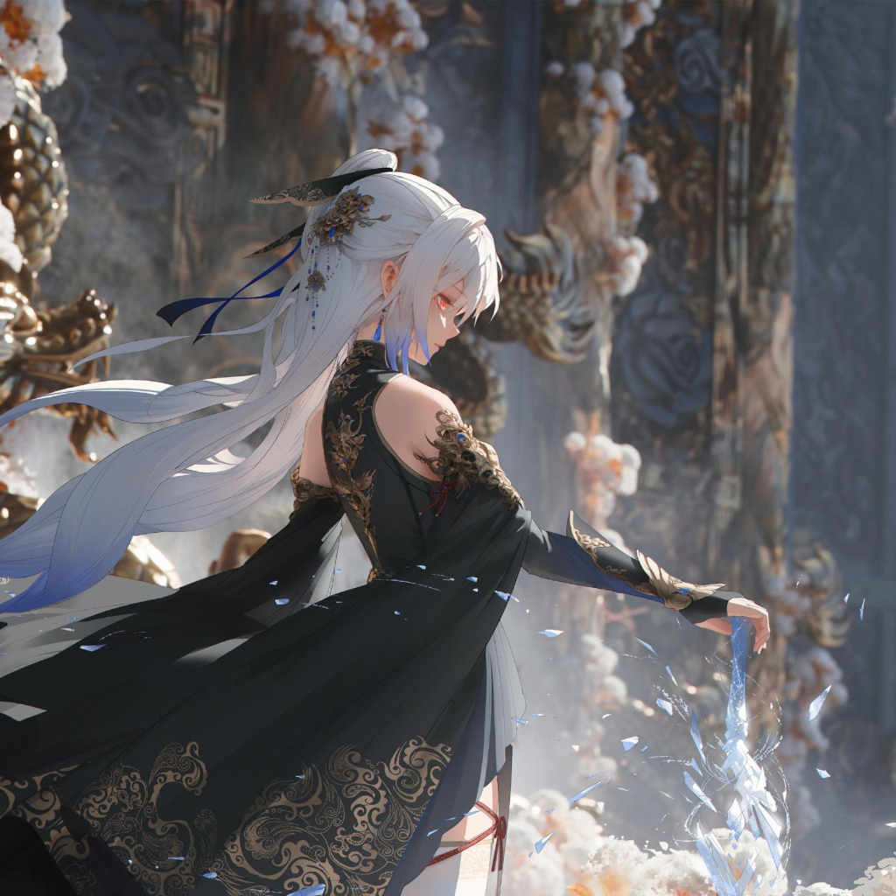

镜流，生于仙舟「苍城」，原「云上五骁」成员、仙舟「罗浮」剑首，云骑军不败盛名的缔造者。而今其名字已被抹去，成为行走于魔阴身边缘的仙舟叛徒，汲汲追寻旧日的夙愿。
- 中文名：镜流
- 外文名：Jingliu
- 别 名：无罅飞光、大姐姐、镜流大人
- 属 性：冰
- 出生地：仙舟「苍城」
身份背景：来自仙舟「苍城」。传奇“云上五骁”之一，人送尊号“无罅飞光”。超脱了人间的胜负，为了获得斩杀“神”的力量，她选择走上截然不同的道路。至此之后，仙舟的记录中少了一个罗浮“剑首”，多了一个名字被抹去的“叛徒” 。作为曾经景元的授艺恩师，她的身上总有一些讳莫如深的故事。由于魔阴身的影响，有时会陷入癫狂，禁绝感知，将自己视作一柄能破开一切的剑。镜流早已跨过了自己的极限，徘徊于魔阴身的边界。与其睹物思旧，恨火烧身。不如以黑纱障目，信步所之。
相貌衣着：浅蓝灰白色长发，圆环发髻上绑了一根青丝发带，带着银月图案的黑色眼罩。右耳、胸口和背后都挂着一枚水滴耳坠。服饰整体以天青色与烟青色的裁片和边缘组成，并在两侧和背后镂空。服饰表面以云纹和回纹点缀。包裹在里面的是浅色花瓣状的褶裙摆，银色肩甲连着花型袖边。背后结合了分叶披风与飘带的系带，手臂上的结构则是戎装，胸腹部的部分颜色深。脚上穿着过膝长靴。手臂上绑着昙花。镜流衣服飘带上的图案是从新月到满月的月相变化。
